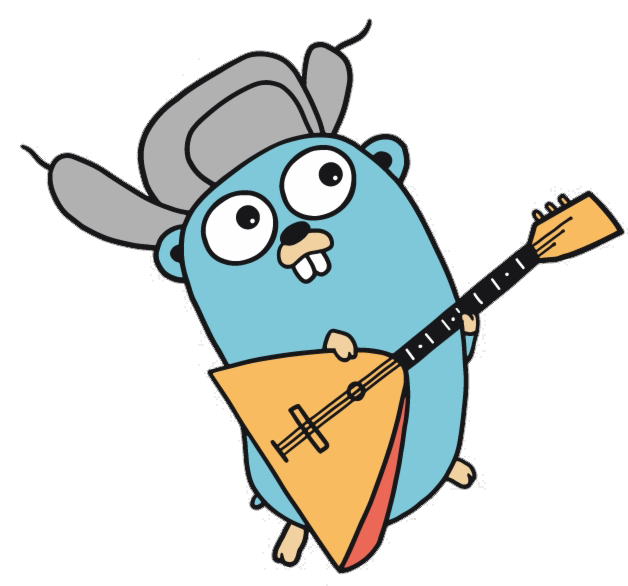
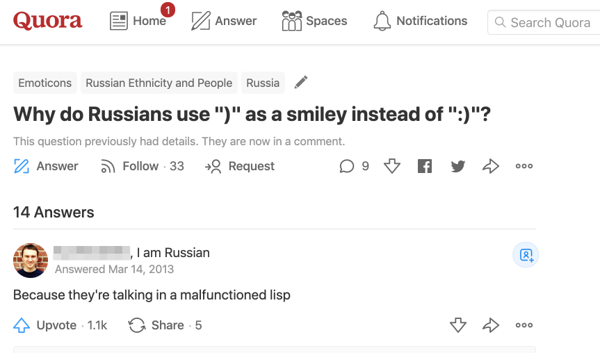

Hacking on clojure.core & runtime
Vlad Bokov
vlad@lunatic.cat
# whoami - 5 yrs clojure developmemt - [author](https://github.com/razum2um?utf8=%E2%9C%93&tab=repositories&q=&type=source&language=clojure) of a [few](https://github.com/clojure-ru?utf8=%E2%9C%93&q=&type=source&language=clojure) [libs](https://github.com/lunatic-cat?utf8=%E2%9C%93&q=&type=source&language=clojure) - [awesome-clojure](https://github.com/razum2um/awesome-clojure) list curator - [@razum2um](https://twitter.com/razum2um) - tweet mostly about clojure / functional code
Origin

@hardcodefm
host
Psst, learn you some russian
for the great good

Let's get serios (a poll)
encountered a clojure bug
debugged clojure (JDWP etc)
changed something inside clojure internals
contributed back
# Disclaimer - I will be speaking to different topics & my experience - Please, don't fork clojure for your production - Don't expect me to present my shiny fork or give advice - Be open to possible insigths - Starting point to dig into sources - Reopen the slides later again, check out the links
# Why talk about clojure? - close to ruby as per "change-anything" at runtime - but JVM final + immutable - written in a clear high-level language - *relatively* performant - [clojure-goes-fast](http://clojure-goes-fast.com/) - source is quite educationable and *ideomatic* - builds relatively fast
# So, lets talk about...
Parens
))))
# What if you want ``` defn foo [x] map inc (range x) def my-list foo 10 ```
# Ways to go - Macros - Tagged literals - clojure.lang.LispReader
# Macros - can read arbitrary number/nested of Symbols - dont compose^W only compose with each other - you know'em, bro
# Tagged literals - happens after parsing - can read only proper value (wrapped/scalar) - contradicts clojure mantra - by [@puredanger](http://insideclojure.org/2018/06/21/tagged-literal/) - [example gist](https://gist.github.com/razum2um/bdde7d13f47c31e42046f7b0b6aa818d) ``` (jdef greeting "world") (println (str "hello " greeting)) #jruby[puts "hello #{greeting}"] ```
# [jwymanm/chiara](https://github.com/jwymanm/chiara) - done by macros - nobody cares for about 5 years
# Let's talk about clojure.lang.LispReader ### Short intro into clojure source
# What if you tired to hold shift: ``` [take 10 [map inc [range 10]]] ```
# clojure.lang.LispReader - seems easy to change - indeed 4 lines-diff in reader - requires current clojure std to be rewritten
Go deeper
# So, lets talk about...
# Bugs - [261 bugs open atm](https://clojure.atlassian.net/browse/CLJ-2522?jql=project%20%3D%20CLJ%20AND%20issuetype%20%3D%20Bug%20AND%20status%20%3D%20Open%20AND%20resolution%20%3D%20Unresolved%20ORDER%20BY%20priority%20DESC) - there are farewell letters *due this*: [My Increasing Frustration With Clojure, 2016](http://ashtonkemerling.com/posts/my-increasing-frustration-with-clojure/) - he mentioned 5 very long-running issues, 4 of them are still there
# Poll ``` (def a -10000000000000) (Math/abs a) ;; => ? ```
# Answer - 1316134912 - [CLJ-1921](https://clojure.atlassian.net/browse/CLJ-1921) - why?
# Dynamic types + interop != magic ``` (def ^Long a -10000000000000) (Math/abs a) Syntax error (IllegalArgumentException) More than one matching method found: abs ```
# Dynamic types + interop != magic - static double abs(double a) - static float abs(float a) - static int abs(int a) - static long abs(long a)
# Dynamic types + interop != magic - a is an Object - Reflector.invokeMatchingMethod - int version is found first
# Lets try to workaround it ### note: `^` is just a meta :tag
# Lets auto apply workaround ``` (defmacro defdef [name & body] `(let [x# ~@body t# (type x#) v# (def ~name x#)] (alter-meta! v# assoc :tag t#) v#)) ```
# How about redefine `def`, poll: ### what happens here ``` (def def def) ```
# How about redefine `def`? - but `def` is not a clojure.lang.Var (no `alter-var-root`) - it's `(get clojure.lang.Compiler/specials "def")` - `clojure.lang.Compiler/specials` if `final` `PersistentHashMap`
# @Compiler/specials ### 4-line changes, [razum2um/clojure:cljdef](https://github.com/razum2um/clojure/compare/master...razum2um:cljdef) ``` (swap! clojure.lang.Compiler/specials clojure.set/rename-keys {'def 'cljdef}) (cljdef a 1) ;; => #'user/a (def x 2) ;; => Syntax error ```
# Now what? ;; TODO - impl. a IParser, put into `Compiler/specials` - hook & track *all* the `def`initions across deps - theoretically we could store them elsewhere - and index/do best LSP
Go deeper
# So, lets talk about...
# So, lets talk about...
# What if you want ### (but java.util.regex.Pattern != IFn) ``` (->> [{:subj "hello" :to "clojuru"} {:subj "hello" :to "world"}] (filter (comp #"hello" :subj)) (remove (comp #"world" :to))) ```
# clojure.lang.IFn - Vector and Map implement this ❤️ - functions are composable - yes, calling semantics is questionable - but y not?
# clojure.lang.PatternFn ### see [razum2um/clojure:pattern-ifn](https://github.com/razum2um/clojure/compare/master...razum2um:pattern-ifn) - got rid of many typehints :( - LispReader: RegexReader#invoke - RT: print - core_print.clj: print-dup & print-method
# Caveats - breaks `(def ^Pattern #"")` - [clojure/tools.reader](https://github.com/clojure/tools.reader/blob/23bfba4b3d4c35692beced1f2f64f818bdb64d75/src/main/clojure/clojure/tools/reader/impl/commons.clj#L46) - breaks `(instance? Pattern x)` - [AvisoNovate/pretty](https://github.com/AvisoNovate/pretty) - changes behaviour *tested* since 2009 ``` FAIL in (test-type-preds) (predicates.clj:132) (not ("ifn?" #"a*b")) ```
# WHY#1 - I want to keep thinking in clojure - use clojure fns, semantic, dynamism / jvm batteries - stay in REPL - not access REPL state from the editor - I care about my development flow - not just typings amount - about composability of little dirty pieces of code - easy to explore
# WHY repl-first - copyable, immutable history - next command is conj - logged reproduce-ability - instead of dirty in-place reevaluation - TODO: ads cljsh
# WHY#2 - no clojure fork, (holy rich!) - nothing strange inside the committed codebase - not selling anything to anybody
# why not CIDER / emacs plugin - use clojure / jvm batteries - stay in REPL - not access REPL state from the editor - - explore
# lets talk about parens - search for fork - count difff lines for that
# lets talk about macros - still sexps - validated - not really a language, but DSL
# lets talk about read literals - beyond sexp - discouraged
# lets talk about regexps - instead of (->> coll (filter #(re-find #"smth" %))) - you want this (->> coll (filter #"smth"))
# lets talk about brackets - instead of `(->> coll (filter #"smth"))` - you want this `coll | filter #"smth"` - i.e. a `|` searches first fn after last `|`, if there's such arity => close bracket, go 1 level up (as may closing brackets possible), otherwise open a bracket
# modify prev command - `(-> obj fn-returns-coll (->> (map f1)))) - you want this `coll | filter #"smth"` - i.e. a `|` searches first fn after last `|`, if there's such arity => close bracket, go 1 level up (as may closing brackets possible), otherwise open a bracket
# lets talk about classloaders - java delegates search to parent first - clojure is different: top searched first
# lets talk about origins - `{}`, `[]` are clojure.lang.IMeta - `String`, `Integer` etc are java native
# lets talk about origins - `(def ring-req {...}) - instead of this `(is (= {:a 1 :b {...}} (f ring-req)}))` - I wanted this `(is (= {:a 1 :b ring-req} (f ring-req)}))` - ideally I wanted to deduce the shortest possible path - without conditions - to merge constants, variables and arguments into a result - i.e. given a structure I wanted to ensure a presence of a unique codepath execution line corresponding to this - and express it in terms of assoc/dissoc/merge/conj/disj
# let's talk about startup time - `time clj -e ''` - takes 2.06s on my MBP - clj -A / lein repl / etc on a repl project - takes forever
# ideas - don't restart repl - TODO: ads pomergranate - persistent jvm - TODO: link to why androind slow -> core - reduce core by physically deleting functions - what if we gather eveything on runtime and assume that we don't eval - again - it's DEVELOPMENT clojure build, don't use on prod - TODO: ads dunaj
# fin - dream big - change and adapt your tools for yourself - think globally - act locally